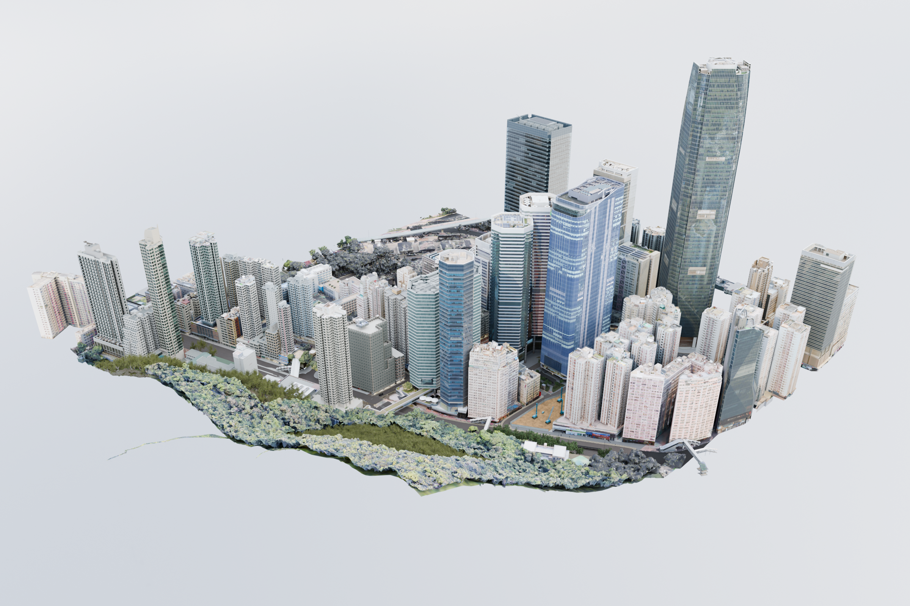
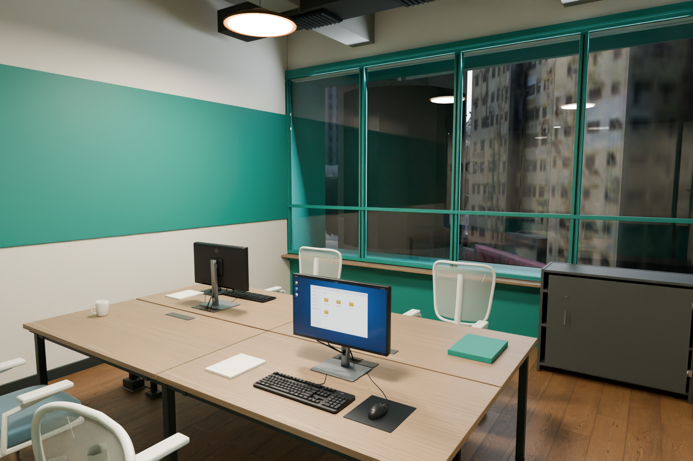

2026.10.22 · HK49 R47b · 完整工作场景
香港街区：室内协作分支
外围继续精修；学长从共同基线新建室内与桌面任务。后续提交室内增量，在最新城市副本中合并。
先打开什么
- 用 Blender 4.5.13 LTS 打开 完整街区工程。
- 另存工作副本，新增室内放在
IN_SENIOR_20261022 集合。 - 读 快速开始 和 分支开发与合并约定，填好建筑、楼层与高程后施工。
主工程纹理/字体内嵌，已通过独立重开检查；室外仍在精修，交接不代表全区验收结束。
环境预览

总览来自 R46e；本包 R47b 在此基础上新增门架修订，既有室内保持。

IN20 办公室参考，独立未合并候选。
交回什么
室内增量 interior_delta.blend、分支清单、原建筑改动请求、必要素材/源码、实际图片与任务记录。
版本与能力记录 · 文件清单 · SHA-256
校验：python -B tools/verify_package.py。坐标：X=E−839826，Y=N−816525，Z=HKPD；单位米。